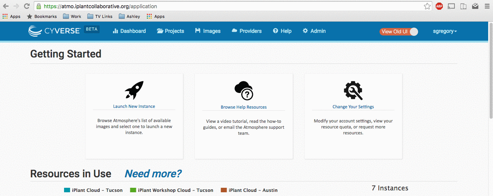
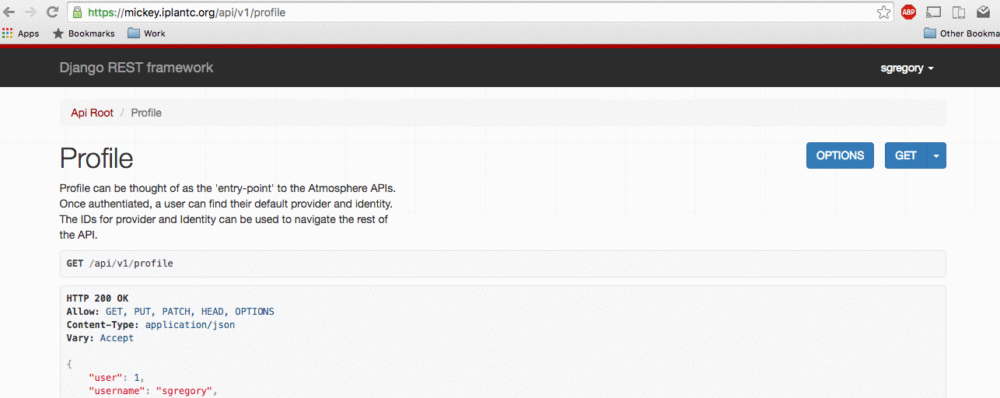

Staff Guide
Audience
The staff guide is intended to be viewed by those who have been or will be given 'is_staff' privileges on Atmosphere.
Staff Responsbilities
Staff members are responsible for:
- Approving resource requests
- Approving imaging requests
- Responding to user feedback, support requests
- Triage errors by following the notes in this guide
- Contact Atmosphere team with the most DETAILED information possible to ensure the problem is resolved as quickly as possible.
Granting staff access
What makes a Staff member in Atmosphere different from a regular user?
API Staff members have the ability to:
- Emulate end-users to help reproduce problems for the Atmosphere Team
- Respond to and accept resource requests in the Troposphere App.
- Respond to and accept imaging requests in the Troposphere App.
- Access the
/adminbuilt-in django administration pages.
Troposphere Staff members have the ability to:
- Access the
/adminbuilt-in django administration pages.
How do I grant Staff access to the Atmosphere APIs to User X?
To get to Atmosphere's Python REPL:
cd /opt/dev/atmosphere # References the canonical 'dev' path.
source /opt/env/atmo/bin/activate # References the canonical 'env' path.
./manage.py shellOnce inside Atmosphere's Python REPL:
from core.models import AtmosphereUser
user = AtmosphereUser.objects.get(username='x')
user.is_staff = True
user.is_superuser = True
user.save()
# To set the users password at the same time
# (This is required if you want /admin access without LDAP)
# user.set_password('new_password')How do I grant Staff access to the Troposphere Admin pages to User X?
To get to Troposphere's Python REPL:
cd /opt/dev/troposphere # References the canonical 'dev' path.
source /opt/env/troposphere/bin/activate # References the canonical 'env' path.
./manage.py shellOnce inside troposphere's Python REPL:
from django.contrib.auth.models import User
user = User.objects.get(username='x')
user.is_staff = True
user.is_superuser = True
user.save()Accessing the Django Administration Pages
First, A warning about Django Administration Pages
It is important to note the amount of responsibility that one assumes when they are given access to these admin pages.
These pages can be thought of as a direct line into all of the available tables and rows in the database.
- "Objects" (Database entries) can be manually deleted and lost forever.
- Values can also be edited incorrectly and cause unforseen problems during a users experience.
- Scalar values that are changed can affect a wide variety of functionality, as an example: you should always create a new Quota rather than edit, because to edit would potentially change that value for >1 users.
Please, USE CAUTION when editing any entry directly.
Accessing the Django Administration Pages (Atmosphere)
From here, you have full access to all users, identities, requests, and other Atmosphere models.
Logging in through Django admin interface
In order to access the Django Administration Pages in Atmosphere your user must both have the is_staff and is_superuser privileges AND a valid password. If you are using an LDAP backed Atmosphere, your "Normal" LDAP login should suffice. If you are not, you will need a password set for you by another Atmosphere Staff user, or you must set your password via the REPL (See Staff access for more details).
Navigate to https://<your_url>/admin and log in as a staff user to access the Django admin interface.
Accessing the Django Administration Pages (Troposphere)
The Django Admin pages for Troposphere will allow you to manage MaintenanceRecords and other Troposphere models.
Logging in via Troposphere
If a user is staff, you can gain accessing to the Django Administration Pages by first logging in normally through Troposphere at https://<your_url>/application. Next, redirect your browser to https://<your_url>/tropo-admin. From here you can manage Maintenance Records, which will block normal users from accessing the website.
Logging in via the Login interface
You can navigate directly to https://<your_url>/tropo-admin and log in as a staff user if you have an LDAP backed Atmosphere.
Account Emulation
To emulate an account, you must be a staff user. If you are not sure or need staff user access, see Staff Access
Emulating a user through Troposphere
To emulate a user, you must first log in to Troposphere as a staff user. First, login normally as the staff user. Next, navigate to this page in your browser: https://<your_url>/application/emulate/<username>
After a series of redirections, you should see that the username in the Top Right corner has changed to the user you are intending to emulate. If you are unable to emulate a user after several attempts, ensure that the username exists and is spelled properly.
Note: You can also emulate from "Admin > Manage Users".
- Click on the "Admin" tab within the header
- Click on "Manage Users"
- Search by username
- Click on the "user" icon to the left of username
Unemulate a user:
When done emulating a user, there are several options to 'disconnect' from the session:
- navigate to
https://<your_url>/application/emulate/<your_username> - navigate to
https://<your_url>/application/emulate(NOTE: no username afteremulate.)
Or, you can also logout and upon the next login you should see your own account again.
How to emulate a user on Troposphere via the URL https://<your_url>/application/emulate/<username>:

Emulating a user through the API
To emulate a user, you must first log in to Atmosphere API as a staff user. Note: If your site does NOT handle username/password validation (No LDAP) then a user/password combination must be created through Django first. The user must also have marked is_staff and is_superuser true.
After logging in as a staff user, navigate to https://<your_url>/api/emulate/<username>
From here, you will be able to perform actions through the Troposphere UI as if you were logged in as the user you are emulating.
Unemulate a user:
When done emulating a user, you can either navigate to https://<your_url>/api/emulate/<your_username> or https://<your_url>/api/emulate with no username after emulate.
How to emulate a user on the Atmosphere API via the URL https://<your_url>/api/emulate/<username>:

Checking logs
The aggregate of all Atmosphere log output can be found at <atmosphere_install_location/logs/atmosphere.log>
Individual log files can be found in the same directory with a format of atmosphere_<type>.log. This includes:
- deploy
- status
- auth
- API
- libcloud
Troposphere logs can be found at <troposphere_install_location/logs/troposphere.log> Celery logs can be found at </var/log/celery/name_of_celery_node_1.log>
Unlike Atmosphere logs, there is only one Troposphere log file. Here, you can see Troposphere authentication and API logs. Note that logrotation will be applied to most logs, so be sure you are looking in the right file relative to the date/time of the errors occurence.
Administration of User Requests
There are serveral types of requests a user can make while using Atmosphere:
- Resource Requests - These requests, when approved, will grant a larger quota and/or allocation for the requesting user.
- Imaging Requests - These requests, when approved, will create a new image from an existing instance that has already been properly configured.
Allocation Requests
If a user has an active resource request, their request will appear under the "Resource Requests" tab in the Troposphere Admin UI. Otherwise, allocation and quota increases must be handled through the Django admin UI.
Granting a larger Allocation via Admin Pages
Navigate to https://<site_url>/admin/core/identitymembership and search for the user you are changing. The results will contain a new entry for every membership that user belongs to, which is effectively an "account" on every provider the user has access to. Select the appropriate identity membership based on the provider you want to change the user's allocation or quota on.
To change a user's allocation, select the "allocation" dropdown menu and select the new allocation to assign.
- "Threshold": the number of CPU minutes to allocate. Eg. 168 AU = 10080 threshold value
- "Delta": positive to indicate an allowance that expires at the end of the month, and a -1 value indicates a permanent allowance.
If the allocation you would like to assign is not listed, you can create it by clicking the green plus sign to the right of the dropdown.
Do Not edit the existing allocation.
Granting a larger Quota via Admin Pages
To change a user's quota, select the "quota" dropdown menu and select the new quota to assign.
- CPU: The total number of CPUs a user's instances can utilize. Eg. A value of 16 can equal two 8 CPU instances, four 4 CPU instances, etc.
- MEM: The total amount of RAM a user's instances can utilize in GB.
- DISK: The total amount of storage a user's volumes can utilize in GB.
- DISK #: The total number of volumes a user can have at one time.
- SUSPEND #: The total number of suspended instances a user can have at one time.
If the quota you would like to assign is not listed, you can create it by clicking the green plus sign to the right of the dropdown.
Do Not edit the existing quota.
Example:
How to grant a quota or allocation from the Django Admin panel:
Granting Allocation/Quota via Django Admin
Imaging Requests
This will take you through how to login to atmosphere via the Troposphere UI admin interface and approve an imaging request. WARNING: At most one machine request should be in the 'started' or 'imaging' state at a time. Failure to follow these rules could potentially cause filesystem trouble. You have been warned.
Approving a 'pending' Machine Request
Describe the process, step by step, of how to login to Atmosphere via the Troposphere UI. Select the admin panel Select Machine Requests Click 'approve'
Approving a Machine Request (Including those in ERROR)
- Login as a staff user who has access to the Troposphere Admin Panel
- Select 'Imaging Requests' for a list of active requests.
- To Approve a Machine Request that is in a state other than pending, first select 're-submit'
- To start the Machine Request immediately, Click 'approve'. Being sure to pay attention to the warning above that ONLY ONE request should be in the
imagingstate. - After approving a machine request, return ~15-20minutes later and ensure the request was successful. If not, see "Troubleshooting Imaging Requests" below.
Troubleshooting Imaging Requests
Usually the Imaging Request process is 100% automated. Occasionally though, you will find the request is in (ERROR).
Fixing an Imaging Request in the (ERROR) state
- If the MachineRequest throws an exception and the (Status Message) shows: (validating) Error ...
- Including the text: "Maximum number of instances exceeded"
Ask a System Administrator to remove the instances from the atmosphere admin user and tenant. (This problem will be automated away shortly)
- If the MachineRequest throws an exception and the (Status Message) shows: (processing -
) Error ... (validating) Error ... - Especially:
AttributeError: \'NoneType\' object has no attribute \'id\'\n'
See 'Fixing a request in the processing or validating state.'.
- If the MachineRequest throws an exception and the Status Message shows: (imaging) Exception ...
See 'Fixing an Imaging Problem'.
Fixing a request in the processing or validating state.
These errors are the result of an old way of handling 'caching' on our celery nodes.
- To fix a Cache problem, see 'Restarting the Imaging service on the Atmosphere Server'
- Alternatively, celery processes will naturally turn over after some length of time. If the MachineRequest has been in error for >12 hours, simply re-running the task can solve the problem.
If the Image Request is having trouble with Atmospheres internal Cache, you will see errors that look like this: If the MachineRequest throws an exception and the (Status Message) shows:
processing - <IMAGE_ID>+serverRef... does not existvalidating+ERROR - AttributeError("'NoneType' object has no attribute 'id'",)
First attempt:
- See 'Restarting the Imaging Service'
If you receive the same error:
- See 'Making contact with the Atmosphere Support Team'.
Fixing an error in the imaging state.
NOTE: On average, it takes 20-40minutes to go through 'imaging' of a 10GB disk. The larger the disk size, the longer the entire process will take.
If the MachineRequest throws an exception and the (Status Message) shows: (imaging)
If an image throws an exception while it is in the 'imaging' step, pay attention to the exception message, and you can generally deduce how/why an error occurred. These errors occur outside the flow of Atmosphere, in Chromogenic, and as such simply repeating the image request will do you no good here.
Common reasons for failure:
- Bad Filesystem type (Rare – usually introduced by staff trying out new img files)
- Missing modules (Ex:
/dev/nbdis usually missing after reboot. To restore:modprobe nbd max_part=16) - Out of Disk space (Free up disk space by cleaning out logs or the storage directory)
- Running more than one imaging task at the same time may cause problems with OS stability.
Taking action to restart the Imaging Services
After working through the troubleshooting above, you may be required to restart the imaging service for Atmosphere. That process is described below.
Restarting the Celery Async task service on the Atmosphere Server
To restart all celery workers, use this command:
service celeryd restartRestarting the Imaging service on the Atmosphere Server
WARNING: Before you restart the service, double-check (via flower) that the imaging queue is empty before you continue..
# Kill all of the celery workers that are listening to 'imaging' (Note, this is *forceful* for a *clean* restart, see 'Restarting the Celery Async task service on the Atmosphere Server')
ps auxww | grep 'celery worker' | grep 'imaging' | awk '{print $2}' | xargs kill -9
# This will only start the imaging service, which is no longer running.
service celeryd startProblem: A MachineRequest has been processed as a "New Application", but we would rather it be "A second version of Application X"
from core.models import Application, ApplicationVersion, ProviderMachine
mach = ProviderMachine.objects.get(instance_source__provider__id=4, instance_source__identifier="f77cb286-d5fc-4a3e-b15b-98e5a9dd2a86")
version = mach.application_version
move_to_app = Application.objects.get(id=1144) # this ID can be found in the Troposphere GUI when you are "viewing" the image you want to move your version to...
version.application = move_to_app
# NOTE: you *must* have a unique combination of 'version name' and 'application ID', so you will likely need to rename one of the versions from the default (1.0) name.
version.name = "1.2"
version.save()Problem: A MachineRequest has been processed as "private" but I would like to now make it publicly available.
Step 1: Update the glance image visibility for each provider
from core.models import Identity
from service.driver import get_account_driver
ident = Identity.objects.filter(provider__id=4).first()
accounts = get_account_driver(ident.provider)
glance_img = accounts.get_image("f77cb286-d5fc-4a3e-b15b-98e5a9dd2a86")
accounts.image_manager.glance.images.update(glance_img['id'], visibility='public')Step 2: Update the application from 'private' to 'public':
from core.models import Application
app_to_change = Application.objects.get(id=X)
app_to_change.private = False # public
app_to_change.save()Making contact with the Atmosphere Support Team
If the information in this guide was not enough to help you solve the users imaging problem, you will need to contact the Atmosphere Support Team. To ensure that your end user requests are resolved as quickly as possible, it is highly encouraged that you first colelct the following "Level two triage information".
When making contact with Atmosphere support team:
- Copy/Paste the traceback that is included with the Machine Request
- Instance ID of the machine that was imaged (Communicate to the user that they should NOT delete the image until the entire process is completed.)
- Username and Instance IP related to the machine.
- Any additional information about the MachineRequest that may be different (User was trying to upgrade kernel, etc.)
Example request that a staff member would write after triaging a problem:
Username: joetest
Instance ID: 1111-222-3344-4567
Traceback : (validating) ERROR - AttributeError("'NoneType' object has no attribute 'id'",) Exception:'Traceback (most recent call last):\n File "/opt/env/atmo_mm/local/lib/python2.7/site-packages/celery/app/trace.py", line 240, in trace_task\n R = retval = fun(*args, **kwargs)\n File "/opt/env/atmo_mm/local/lib/python2.7/site-packages/celery/app/trace.py", line 438, in __protected_call__\n return self.run(*args, **kwargs)\n File "service/tasks/machine.py", line 319, in validate_new_image\n using_admin=True)\n File "service/instance.py", line 959, in launch_machine_instance\n name, userdata, network, **kwargs)\n File "service/instance.py", line 1014, in _launch_machine\n **kwargs)\n File "/opt/env/atmo_mm/local/lib/python2.7/site-packages/rtwo/driver.py", line 277, in create_instance\n super(EshDriver, self).create_instance(*args, **kwargs),\n File "/opt/env/atmo_mm/local/lib/python2.7/site-packages/rtwo/driver.py", line 176, in create_instance\n return self._connection.create_node(*args, **kwargs)\n File "/opt/env/atmo_mm/local/lib/python2.7/site-packages/rtwo/drivers/openstack_facade.py", line 424, in create_node\n server_params = self._create_args_to_params(None, **kwargs)\n File "/opt/env/atmo_mm/local/lib/python2.7/site-packages/rtwo/drivers/openstack_facade.py", line 380, in _create_args_to_params\n ._create_args_to_params(node, **kwargs)\n File "/opt/env/atmo_mm/local/lib/python2.7/site-packages/libcloud/compute/drivers/openstack.py", line 1363, in _create_args_to_params\n server_params[\'imageRef\'] = kwargs.get(\'image\').id\nAttributeError: \'NoneType\' object has no attribute \'id\'\n'
Other Notes from Triage:
- I attempted to re-approve the request after a few hours had passed.
- I asked one of the system administrators who could connect to the production server to restart celery
- After restarting celery and re-approving the request a second time, the failure came back.Troubleshooting common errors on Instance Launch/Deployment
The Problem: After completing the launch instance dialog, the instance immediately goes to error state.
In most cases, the "Error" state is the result of a problem on the backend cloud provider.
Triaging an instance in the error state: * Use the nova CLI tools to determine the fault message on the instance by running these commands:
nova show <instance_id>- Lookup the fault message below and determine the appropriate solution. If no obvious solution can be found, see Contacting the Atmosphere Team
Common reasons the cloud may launch an instance in error: - Build Scheduling Failed: No host could be found: - These errors appear when the cloud is nearing capacity. - If the instance flavor/size launched was "large" you can try a smaller size and see if the error persists. - If the smaller size launches, your cloud is likely full. Contact the Cloud System Administrator to be sure.
The Problem: Instance is "stuck" in networking
Note that we define 'stuck' as being in the state for >20 minutes, but for some older clouds it can take as long as 2 hours to move from networking to deploying.
An instance will be stuck in networking if one of the following conditions is true:
- The instance was recently launched and has not yet completed the 'boot' process. These instances are offline
- The instance was recently assigned a floating IP and it has not yet "stuck" to the instance. These instances are not reachable via SSH
- The instance is online and reachable via SSH, but the SSH key did not properly deploy to the instance on first boot.
- If after >2 hours, one of these three conditions is still resulting in failure, the instance will move to deploy_error.
- A common resolution to an instance stuck in networking is to reboot it from the Tropospere UI while emulating as the user experiencing the issue. If the instance gets stuck in networking again, proceed to step 2.
- If an instance is stuck in networking, you can check flower to see current celery tasks and find the instance in question. If there is an error, flower will display it and you can diagnore the issue from there.
The Problem: Instance is "stuck" in deploying
When an instance has made it to deploying it is an indication that Ansible code is being run on the device via SSH.
Instances that are in deploying should be diagnosed with flower to see if there is a task currently being run on the instance. If an error is encountered, the task will be retried. Ansible will try a few times to get a 100% success from the list of playbooks.
If it cannot do so, then the instance will be moved to the final state: deploy_error. If the instance goes to deploy_error, see Contacting the Atmosphere Team to provide a fix for the instance. Once a hotfix is in place, the user should be emulated and then the instance should be re-deployed so that the instance will make it to green-light active and the user can begin their work.
Resolving an instance that is stuck in deploy_error
1. In the case of a deploy error, the most common course of action is to emulate as the user facing the issue and click the "Redeploy" button from the instance in question's detail page. If the instance reaches another deploy error, move on to step 2. 2. In some cases, a reboot of the instance will resolve a deploy error. You can try rebooting the instance from the instance's detail page by clicking on the "reboot" button. If for some reason a soft reboot fails, try a hard reboot. If the instance comes back to deploy error, move on to step 3. 3. Check the deploy logs and look for the instance ID to see the output of which specifc tasks failed. From here, you can try to resolve the issue manually and redeploy. To easily check the realtime status of an instance's deploy process, you can use tail -f <deploy_log_file> | grep <instance_alias>
Contacting the Atmosphere Team
You will likely need to contact the system administrator of the cloud and/or the atmosphere team for futher intervention. Please be sure to provide this information at a minimum to ensure your request can be answered in a timely fashion:
Username: Instance ID: IP Address: Cloud Provider: Image/Application selected: (UUID of ProviderMachine would be great, too) Size selected: Fault message from nova: Additional notes from triage:This information will allow more advanced users to reproduce your problem and find a solution without contacting you a second/third time.
Argo Workflow
What is Argo
Argo Workflows is an open source container-native workflow engine for orchestrating parallel jobs on Kubernetes.
Why Argo
Argo will eventually be replacing celery in Atmosphere. It offers more visibility into the tasks that used to performed by celery.
Usage in Atmosphere
As of Atmosphere v37-0, Argo is only used for instance deployment.
Instance Deployment
Instead of running the deployment ansible playbooks as a celery task, an Argo workflow is created to run the ansible playbooks.
There will be one step in the workflow for each playbook.
The creation and polling for the workflow is done in the same place in a celery task.
Necessary arguments are passing to the workflow when it is created.
- There are 3 levels of retries
- the ansible retry, but only for tasks that defines it (usually package install)
- the workflow step retry, if a step in the workflow fails, it will be retried up to a certain times as defined in the workflow definition
- the celery retry, since the creation and polling of the workflow are still part of a celery task, celery task retry still applies here, and this retry will submit a new workflow to Argo each time.
Deployment logs for a workflow are located at
/opt/dev/atmosphere-docker/logs/atmosphere/atmosphere_deploy.d/<USERNAME>/<INSTANCE_UUID>/<DEPLOYMENT_DATE_TIME>/on the host. Each steps/nodes in the workflow will have its own log file in the directory. The logs here are pulled after the workflow is completed (not realtime). > Note: only logs for playbooks that run in Argo Workflow are in those directories, the logs for other playbooks remain where they were.
Troubleshooting
- Most troubleshooting will be done via
argocli andkubectl.
List workflows
argo list -n <NAMESPACE>argo list -n <NAMESPACE> --status <WORKFLOW_STATUS> --since <DURATION>Find Workflow Name for a deployment
As of v37-2 there isn't a convenient way to lookup workflow name in real time other than check the parmeter of individual workflows, and look for username and the IP of the instance. However the workflow name will be part of the log filename that gets pulled after workflow completes, e.g. ansible-deploy-xxxxx.log
From v37-3, workflows will have labels attached to them as metadata.
So to search for workflows for instance with a id of 00000000-0000-0000-0000-000000000000.
argo list -n <NAMESPACE> -l instance_uuid=00000000-0000-0000-0000-000000000000To search for workflows for a particular user
argo list -n <NAMESPACE> -l username=<USERNAME>Get details of a workflow
argo get -n <NAMESPACE> <WORKFLOW_NAME>get the workflow definition as YAML
argo get -n <NAMESPACE> <WORKFLOW_NAME> -o yamlget the instance id of a workflow
argo get -n <NAMESPACE> <WORKFLOW_NAME> -o json | jq .metadata.labels.instance_uuidget the username of a workflow
argo get -n <NAMESPACE> <WORKFLOW_NAME> -o json | jq .metadata.labels.usernameGet logs of a workflow (all pods within the workflow)
argo logs -n <NAMESPACE> <WORKFLOW_NAME>-f to follow the logs
argo logs -n <NAMESPACE> <WORKFLOW_NAME> -fGet logs of a pod
Each pod in an argo workflow will usually consist of 2 containers, main and wait, main container will be the one that executes the actual workload.
kubectl logs -n <NAMESPACE> <POD_NAME> main-f to follow the logs
kubectl logs -n <NAMESPACE> <POD_NAME> main -fResubmit a workflow
There is a command that will resubmit a workflow with the exact workflow definition and parameters.
argo resubmit -n <NAMESPACE> <WORKFLOW_NAME>Flower
Flower is a web based tool for monitoring and administrating Celery workers and tasks.
Logging in to flower
To check flower, navigate to https://<your_url>/flower and log in using your flower credentials.
What are the flower credentials?
On the atmosphere server, run the command:
$ ps aux | grep flower
# OUTPUT example:
root 23488 0.0 1.9 611340 81872 pts/7 Sl Jun03 4:11 python /opt/dev/atmosphere/manage.py celery flower --certfile=/etc/ssl/certs/server.org.crt --keyfile=/etc/ssl/private/server.key --port=8443 --log_file_prefix=/var/log/celery/flower.log --logging=warn --url_prefix=flower --basic_auth=USERNAME:PASSWORDthe USERNAME:PASSWORD is the same values that will be required when logging in to flower.
If you don't have the flower credentials or server access, ask your site operators for more information.
Checking the status of a running task
View the status of recent celery tasks by clicking on the "Tasks" tab.
Search over the list of celery tasks by writing the instance_id or username into the search bar on the Top-Right corner. View the fine-grained details of a task by clicking on the task Name. The most important details are: Traceback (Finding the bug/failure), Worker (Finding the logs).
You can view tasks by status by clicking on the "Monitor" tab and clicking on your desired task state.

Example login to flower
Administering Applications and Images
Migrating Application/Image to a New Cloud Provider
You may have multiple cloud providers connected to your deployment, and you wish to make an existing Application (a.k.a. image) available on a new provider. This process is automated by application_to_provider.py in Atmosphere(2)'s scripts/ folder.
This script will create image objects on the new provider, populate image data and metadata, and create appropriate records in the Atmosphere(2) database. Run ./application_to_provider.py --help for more information on usage.
Example usage:
export PYTHONPATH=/opt/dev/atmosphere:$PYTHONPATH
export DJANGO_SETTINGS_MODULE=atmosphere.settings
source /opt/env/atmo/bin/activate
/opt/dev/atmosphere/scripts/application_to_provider.py 1378 7 --source-provider-id 4 --ignore-missing-owner --ignore-missing-membersSynchronizing Applications/Images across Cloud Providers
application_sync_providers.py is a script which uses application_to_provider to synchronize all Applications (a.k.a. images) from a designated master provider to one or more replica providers. Run ./application_sync_providers.py --help for more information on usage.
Example usage which synchronizes applications from Provider ID 7 (master) to 4 and 5 (replicas):
export PYTHONPATH=/opt/dev/atmosphere:$PYTHONPATH
export DJANGO_SETTINGS_MODULE=atmosphere.settings
source /opt/env/atmo/bin/activate
/opt/dev/atmosphere/scripts/application_sync_providers.py 7 4 5Troubleshooting images that aren't copying to replica providers
Sometimes images are not correctly copied to replica providers. This leaves the system in a state in which Atmosphere has database records for the image on that provider and therefore doesn't attempt to copy the image but the provider can't actually launch and instance with that image because it's either been partially copied or has some other error.
If you're ever in a situation where a particular image doesn't seem to ever get copied to a provider despite running the aplication_sync_providers.py script, use the following steps to troubleshoot:
- Delete the image in the destination provider cloud (e.g. using OpenStack)
- Visit the page for the image that's not being copied in your browser and retrieve its application id (
application/images/<app_id>) Open a Django shell in the main Atmosphere container:
./manage.py shellImport the necessary models and store the Application in question in a variable for later use:
from core.models import Application, ApplicationVersion, InstanceSource, ProviderMachine app = Application.objects.get(id=<app_id>)Retrieve the ApplicationVersion that's not being copied over. You can get a list of all ApplicationVersions that are active for an application by doing:
app.active_versions()- Store the ApplicationVersion that's not being copied over in a variable. We'll call this variable
bad_version. Find the corresponding
ProviderMachinesfor thatApplicationVersion:
ProviderMachine.objects.filter(application_version=bad_version.id)- Take note of the UUIDs for the
ProviderMachineson the replicaProviderand put it somewhere safe. Then delete theProviderMachineson the replicaProvider. Use the UUID from the previous step to find and delete the
InstanceSourcesthat have that UUID and are on the replicaProvider:$ InstanceSource.objects.filter(identifier=<uuid_from_last_step>)Run the
application_sync_providers.pyscript as mentioned above for the correct providers and replicas. This should copy the image to the replica provider.
Setting Maintenance Records
Maintenance records are set separately for Atmosphere(2) and Troposphere. During maintenance, a configurable message is displayed to users, and user login is disabled.
To begin maintenance, enter the following commands on the Atmosphere(2) server:
tropomanage maintenance start --title "2017-12-12 - v30 Deployment" --message "Atmosphere is down for a Scheduled Maintenance, Today between 10am - 4pm MST."
atmomanage maintenance start --title "2017-12-12 - v30 Deployment" --message "Atmosphere is down for a Scheduled Maintenance, Today between 10am - 4pm MST."To end maintenance, enter these commands:
atmomanage maintenance stop
tropomanage maintenance stop